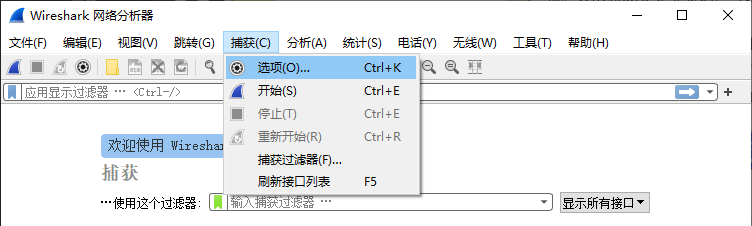
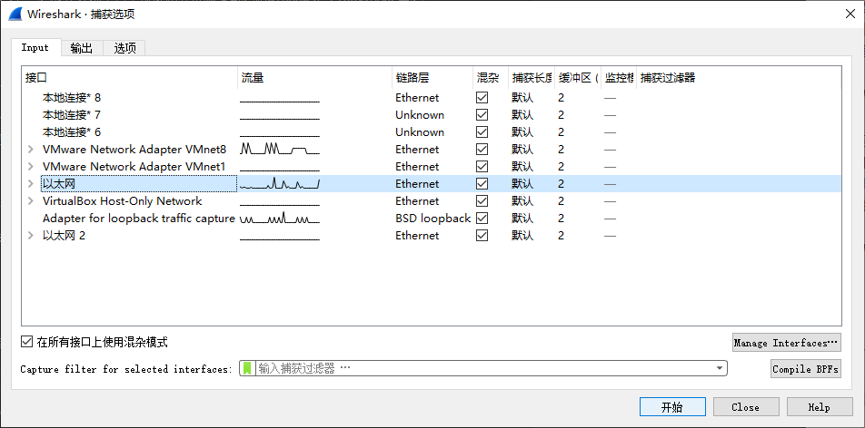
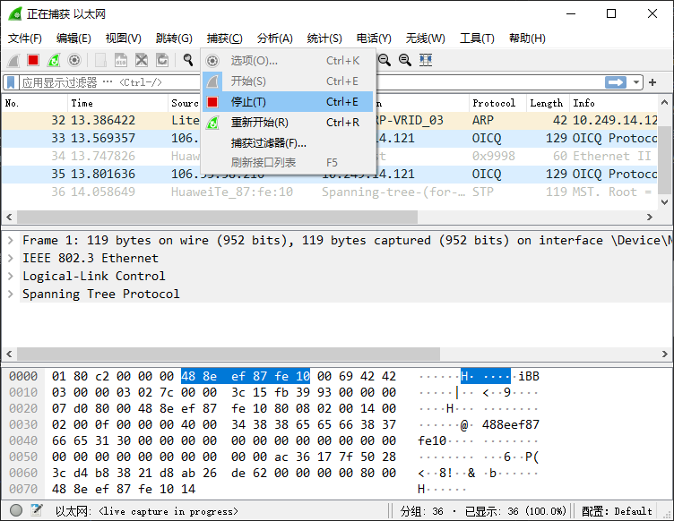

附录 A：Wireshark 入门
Wireshark 是实验里最常用的抓包工具。它的作用很直接：
看你的程序有没有真的发出报文
看报文里的字段是不是填对了
出现 bug 时快速定位问题出在哪一层
第一次使用时，不需要把所有功能都学会。先学会抓包、筛选报文、查看字段，这三件事就够用了。
Wireshark安装
实验室电脑已经安装好 Wireshark，可直接使用。如果你想在自己的电脑上安装，可从 https://www.wireshark.org/download.html 下载并安装。
警告
安装 Wireshark 时，安装程序可能会提示同时安装或升级 Npcap。请不要勾选升级 Npcap 的选项，尽量保持课程要求的版本不变。
如果你当前环境已经可以正常完成 UDP/TCP 实验，就不要因为安装 Wireshark 而顺手升级 Npcap，否则后续实验中的 server 端可能出现异常。
Wireshark 三步上手
Step1：启动 Wireshark，选择要抓包的网卡。
通常应选择当前正在收发数据的网卡。如果你不确定选哪一个，可以先观察哪个网卡右侧的流量曲线在变化，或者先发一个 ping 再判断。

Step2：单击开始按钮，然后再去执行实验操作。
建议先开始抓包，再运行客户端、服务器或测试命令，否则关键报文可能已经错过。

Step3：完成实验操作后，停止抓包；如果有需要，再保存抓包文件。

看懂界面

Wireshark 的界面主要看三个窗口：
最上面是
Packet List：每一行就是一个报文，用来快速浏览。中间是
Packet Details：按协议层次展开报文内容，用来查看字段含义。最下面是
Packet Bytes：显示原始字节，用来核对十六进制内容、字段偏移和大小端。
刚开始用时，先盯住两个地方就够了：
Protocol和Info列，看这个报文大概是什么Packet Details窗口，看字段的具体值是否正确
一些技巧
先记住这几条
先开始抓包，再做实验操作。
每次只关注一个问题，不要同时开太多程序。
看不懂一大堆报文时，先用过滤器把范围缩小。
排查时按链路层、网络层、传输层的顺序往上看。
最常用的过滤器
实验里最常用的是 Display Filter，也就是先抓包，再筛选显示结果。下面这些表达式基本够用：
arp：只看 ARPicmp：只看 ICMPip.addr == 10.0.0.1：只看某个 IPeth.addr == 00:11:22:33:44:55：只看某个 MACudp.port == 2000：只看某个 UDP 端口tcp.port == 80：只看某个 TCP 端口tcp.flags.syn == 1 && tcp.flags.ack == 0：看三次握手的第一个 SYNtcp.flags.fin == 1：看 FIN 报文ip.flags.mf == 1 || ip.frag_offset > 0：看 IP 分片
如果你不确定过滤表达式怎么写，可以先在 Packet Details 里点中某个字段，然后右键选择 Apply as Filter，让 Wireshark 自动生成。
如果想在抓包前就减少无关报文，也可以使用 Capture Filter，例如：
arphost 10.249.8.1tcp port 80
不过在课程实验里，更推荐先正常抓包，再用 Display Filter 慢慢缩小范围，这样不容易漏掉关键报文。
实验里最常用的操作
对字段右键选择
Apply as Column，可以把端口号、序列号、确认号等加到上方列表里，方便对比多个报文。对某个报文右键选择
Set/Unset Time Reference，可以把它当作时间起点，方便看请求和应答之间隔了多久。TCP 实验中可以使用
Follow TCP Stream，快速查看一条连接中的完整数据交换。遇到自定义协议或字段填错的问题时，要结合
Packet Details和Packet Bytes一起看。
按这个顺序排查
抓到报文以后，建议按下面的顺序检查：
先看链路层：源 MAC、目的 MAC、Type 是否正确。
再看网络层：源 IP、目的 IP、协议号、总长度、分片信息是否正确。
最后看传输层：端口号、序列号、确认号、标志位、负载内容是否正确。
不同实验里，可以额外注意这些点：
ARP 实验：有没有发出 ARP 请求，是否收到了 ARP 应答，ARP 表是否更新。
UDP 实验：IP 协议号是否为 17，端口号是否正确，校验和是否合理。
TCP 实验：三次握手和四次挥手是否完整，
SYN和FIN是否各占一个序列号。IP 分片实验：同一组分片的
Identification是否一致，Fragment Offset是否按 8 字节为单位递增。
警告
发送端抓包时，如果网卡开启了硬件校验和卸载（Checksum Offload），Wireshark 里可能会看到“校验和错误”或校验和字段暂时为 0。这不一定说明你的程序有错，可能只是校验和还没有由网卡硬件补上。
所以，遇到校验和问题时，建议优先在接收端抓包验证，或临时关闭网卡卸载功能后再检查。
更多过滤表达式和高级用法，可参考 Wireshark 官方文档：